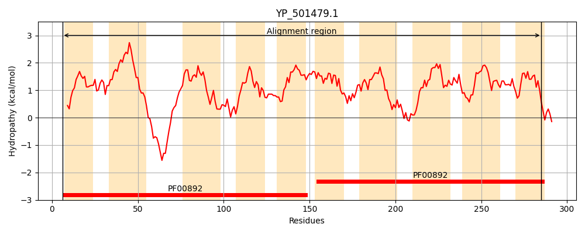
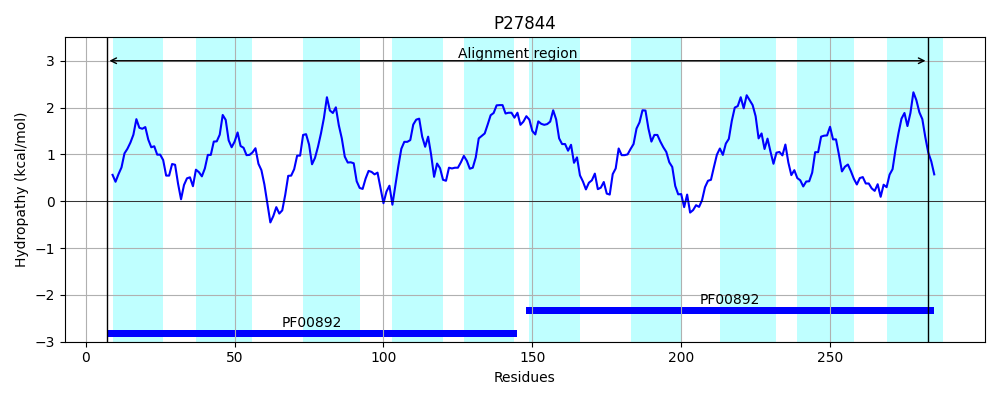
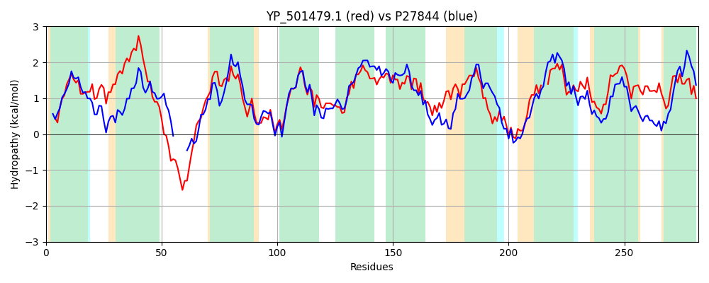

Hit Accession: P27844
Hit TCID: 2.A.7.7.2
Hit Description: gnl|BL_ORD_ID|9632 gnl|TC-DB|P27844|2.A.7.7.2 Protein rarD OS=Escherichia coli (strain K12) GN=rarD PE=1 SV=2
Mach Len: 282
e:0.000000
Query TMS Count : 10
Hit TMS Count: 10
TMS-Overlap Score: 8.400000
Predicted Substrates:CHEBI:3603;chloramphenicol
BLAST Alignment:
Score: 556 , Bit scores: 218 bits, E-value: 4.7e-70, Alignment length: 282, Percentage identity: 38
Query: 6 KKGIFLALSAYILWGILPIYWQFVDAIGAFEILAFRIIFSAIFMIFILAVGQKQRNAFQRDMNQLLGKPIQLLAIVVAGYVITLNWGTFIWAVTNGHVLQTSLGYYINPLVSILLALIFLKERFNKFEWLAILFAFIGVLYMTLKIGEFPIVSIILALSFGTYGLLKKVVHIDAISSITIECIVTAPAGLIYVIYLWQQHQMSFGLNMSSFWLLF--SGAITAIPLILFSAGAKRIPLSLIGFIQYVGPTIMFVLGIFVFKEPFSIDQLITFIFIWTGIVLY 285
++G+ LAL+AY +WGI P Y++ + + A EIL R+I+S FM+ ++++ ++ + L+ P ++ + V+ +I NW FIWAV N H+L+ SLGY+INPLV+I+L +IFL ERF + +WLA++ A GVL G PI+++ LA SF YGL++K + ++A + + IE + P IY+ + G N S LL +G +T +PL+ F+A A R+ LS +GF QY+GPT+MF+L + + E D+++TF FIW + ++
Sbjct: 7 RQGVLLALAAYFIWGIAPAYFKLIYYVPADEILTHRVIWSFFFMVVLMSICRQWSY-----LKTLIQTPQKIFMLAVSAVLIGGNWLLFIWAVNNHHMLEASLGYFINPLVNIVLGMIFLGERFRRMQWLAVILAICGVLVQLWTFGSLPIIALGLAFSFAFYGLVRKKIAVEAQTGMLIETMWLLPVAAIYLFAIADSSTSHMGQNPMSLNLLLIAAGIVTTVPLLCFTAAATRLRLSTLGFFQYIGPTLMFLLAVTFYGEKPGADKMVTFAFIWVALAIF 283 | Protein Hydropathy Plots: |
|---|
|  |  |
Pairwise Alignment-Hydropathy Plot:
|
|---|
|  |